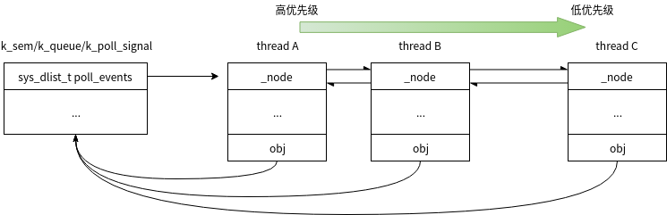
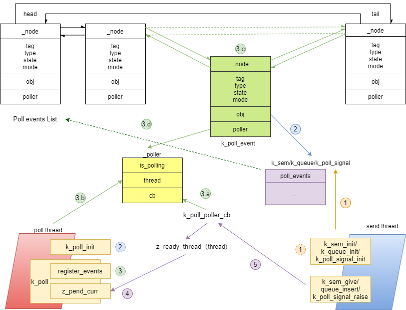

同步-轮询¶
轮询API用于同时等待多个条件中的任意一个满足条件。
使用¶
API¶
void k_poll_event_init(struct k_poll_event event, u32_t type, int mode,voidobj)
作用：初始化一个k_poll_event实例，这个实例将被k_poll轮询
event:要初始化的event
type：event轮询条件的类型，目前支援三种类型，当使用K_POLL_TYPE_IGNORE表示该event将被禁用
K_POLL_TYPE_SIGNAL：poll event 信号
K_POLL_TYPE_SEM_AVAILABLE: 信号量
K_POLL_TYPE_FIFO_DATA_AVAILABLE：FIFO，实际上FIFO使用queue实现的，真正的等待条件是queue
mode：触发模式，目前只支持K_POLL_MODE_NOTIFY_ONLY
obj：轮询的条件，和type要对应，可以是内核对象或者event signal
int k_poll(struct k_poll_event *events, int num_events, s32_ttimeout)
作用：等待一个或者多个event条件有效。 events: 等待事件的数组
num_events: 等待事件的数量，也就是events的个数
timeout:等待超时，单位ms。K_NO_WAIT不等待, K_FOREVER一直等
返回值：当返回0时表示一个或者多个条件有效
注意事项：
k_poll收到条件有效时，仅仅是通知到线程该内核对象有效，还需要线程使用代码主动获取内核对象。
k_poll返回0时，有可能是多个条件有效，需要循环使用k_poll,每次循环后检查那个event有效，需要将其状态设置为K_POLL_STATE_NOT_READY。
void k_poll_signal_init(struct k_poll_signal *signal)
作用：初始化一个poll signal, 该信号可以作为poll event的条件
signal：要初始化的poll signal
int k_poll_signal_raise(struct k_poll_signal *signal, int result)
作用：发送poll signal
signal: 要发送的signal
result: 信号的一个标记值，poll收到信号后可以获得这个值
void k_poll_signal_reset(struct k_poll_signal *signal)
作用：reset signal，如果一个signal被发送，但未被poll前，可以使用该API reset掉
signal: 要reset的signal
void k_poll_signal_check(struct k_poll_signal *signal, unsigned int* signaled, int *result)
作用：获取被轮询信号的状态和值
signal: 要获取的signal
signaled: 是否已发送signal
result: 如果已发送，这里是发送的值
使用说明¶
poll由于可以等待多个条件，因此可以将每个条件一个线程等的形式转化为一个线程等多个条件，减少线程节约线程堆栈。 由于poll被通知并未获取到内核对象，因此实际使用中应劲量避免有将有竞争的内核对象做为poll条件。
内核对象作为poll条件¶
初始化poll 条件
struct k_poll_event events[2];
void poll_init(void)
{
//将my_sem做为poll条件，注意my_sem，需要单独初始化
k_poll_event_init(&events[0],
K_POLL_TYPE_SEM_AVAILABLE,
K_POLL_MODE_NOTIFY_ONLY,
&my_sem);
//将my_fifo做为poll条件，注意my_fifo，需要单独初始化
k_poll_event_init(&events[1],
K_POLL_TYPE_FIFO_DATA_AVAILABLE,
K_POLL_MODE_NOTIFY_ONLY,
&my_fifo);
}
以上初始化也可以用下面方式代替, 同样注意my_sem和my_fifo需要单独初始化
struct k_poll_event events[2] = {
K_POLL_EVENT_STATIC_INITIALIZER(K_POLL_TYPE_SEM_AVAILABLE,
K_POLL_MODE_NOTIFY_ONLY,
&my_sem, 0),
K_POLL_EVENT_STATIC_INITIALIZER(K_POLL_TYPE_FIFO_DATA_AVAILABLE,
K_POLL_MODE_NOTIFY_ONLY,
&my_fifo, 0),
};
poll等待和处理
void poll_thread(void)
{
for(;;) {
rc = k_poll(events, 2, K_FOREVER);
if (events[0].state == K_POLL_STATE_SEM_AVAILABLE) {
k_sem_take(events[0].sem, 0);
//handle sem
} else if (events[1].state == K_POLL_STATE_FIFO_DATA_AVAILABLE) {
data = k_fifo_get(events[1].fifo, 0);
// handle data
}
events[0].state = K_POLL_STATE_NOT_READY;
events[1].state = K_POLL_STATE_NOT_READY;
}
}
poll 信号处理¶
初始化信号，并将其作为poll条件
struct k_poll_signal signal;
void poll_init(void)
{
k_poll_signal_init(&signal);
struct k_poll_event events[1] = {
K_POLL_EVENT_INITIALIZER(K_POLL_TYPE_SIGNAL,
K_POLL_MODE_NOTIFY_ONLY,
&signal),
};
}
线程A poll信号是否发生
void thread_A(void){
while(1){
k_poll(events, 1, K_FOREVER);
if (events[0].signal->result == 0x1337) {
// A-OK!
} else {
// weird error
}
events[0].signal->signaled = 0;
events[0].state = K_POLL_STATE_NOT_READY;
}
}
发送信号
k_poll_signal_raise(&signal, 0x1337);
实现¶
通知机制¶
poll初始化时一个等待条件对应一个poll event poll将维护一个poll events链表，当一个thread进行k_poll等待某些条件时，这些条件对应的的poll event被加入到poll event链表中。同时会将等待的thread和一个poller 存储在poll event中。然后thread进入超时等待，处于pending状态。 当等待条件发生时，等待条件会主动呼叫对应自己poll event内poller中的callback，callback内会将poll event的thread从pending状态变为ready状态。 之后thread继续运行，将已经就绪的poll event从链表中取出，完成k_poll轮询。
数据结构及类型介绍¶
一个poll event的结构体如下
struct k_poll_event {
sys_dnode_t _node; // poll event链表用
struct _poller *poller; //poller，存储回调和polling状态
u32_t tag:8; //zephyr内核没有使用，可以被用户设置
u32_t type:_POLL_NUM_TYPES; //poll 条件类型
u32_t state:_POLL_NUM_STATES; //poll event的状态
u32_t mode:1; //poll 模式，目前只有一种
u32_t unused:_POLL_EVENT_NUM_UNUSED_BITS;
union { //保存poll条件的句柄
void *obj;
struct k_poll_signal *signal;
struct k_sem *sem;
struct k_fifo *fifo;
struct k_queue *queue;
};
};
poll条件类型定义如下：
enum _poll_types_bits {
/* can be used to ignore an event */
_POLL_TYPE_IGNORE,
/* to be signaled by k_poll_signal_raise() */
_POLL_TYPE_SIGNAL,
/* semaphore availability */
_POLL_TYPE_SEM_AVAILABLE,
/* queue/fifo/lifo data availability */
_POLL_TYPE_DATA_AVAILABLE,
_POLL_NUM_TYPES
};
可以看出等待条件有3种poll signal, sem, queue(fifo/lifo是由queue实现)
poll状态类型定义如下
enum _poll_states_bits {
/* default state when creating event */
_POLL_STATE_NOT_READY,
/* signaled by k_poll_signal_raise() */
_POLL_STATE_SIGNALED,
/* semaphore is available */
_POLL_STATE_SEM_AVAILABLE,
/* data is available to read on queue/fifo/lifo */
_POLL_STATE_DATA_AVAILABLE,
/* queue/fifo/lifo wait was cancelled */
_POLL_STATE_CANCELLED,
_POLL_NUM_STATES
};
一个poller的结构体如下
struct _poller {
volatile bool is_polling; //是否需要polling
struct k_thread *thread; //是那个thread在polling
_poller_cb_t cb; // 条件满足时使用这个cb通知条件已发生
};
初始化¶
k_poll_event_init其实就是将k_poll_event和等待条件建立联系，然后初始化类型和状态
void k_poll_event_init(struct k_poll_event *event, u32_t type,
int mode, void *obj)
{
event->poller = NULL;
/* event->tag is left uninitialized: the user will set it if needed */
event->type = type;
event->state = K_POLL_STATE_NOT_READY;
event->mode = mode;
event->unused = 0U;
event->obj = obj; //将等待条件和poll event建立联系
}
等待及通知¶
k_poll等待¶
k_poll首先给要poll 的event注册poller，然后等待条件发生，细节代码比较多，这里只列出主要的分析 k_poll->z_impl_k_poll
int z_impl_k_poll(struct k_poll_event *events, int num_events, s32_t timeout)
{
int events_registered;
k_spinlock_key_t key;
//为poll event准备poller
struct _poller poller = { .is_polling = true,
.thread = _current, //将当前thread提供给poller，将来callback时让该thread退出pending
.cb = k_poll_poller_cb };
__ASSERT(!arch_is_in_isr(), ""); // isr中不允许使用k_poll
__ASSERT(events != NULL, "NULL events\n");
__ASSERT(num_events >= 0, "<0 events\n");
//注册poller给poll event，并检查是否已经有就绪的条件
events_registered = register_events(events, num_events, &poller,
(timeout == K_NO_WAIT));
key = k_spin_lock(&lock);
//如果已经有就绪的条件，清除注册的poll event，并返回表示已经有条件满足
if (!poller.is_polling) {
clear_event_registrations(events, events_registered, key);
k_spin_unlock(&lock, key);
return 0;
}
poller.is_polling = false;
//如果不等待条件满足，直接退出
if (timeout == K_NO_WAIT) {
k_spin_unlock(&lock, key);
return -EAGAIN;
}
//等待条件满足，条件满足时会通过poller的callback通知该thread退出等待状态
//等待超时会发生调度
_wait_q_t wait_q = Z_WAIT_Q_INIT(&wait_q);
int swap_rc = z_pend_curr(&lock, key, &wait_q, timeout);
//等待结束后将清楚掉已经注册的event
key = k_spin_lock(&lock);
clear_event_registrations(events, events_registered, key);
k_spin_unlock(&lock, key);
return swap_rc;
}
这里也可以看到条件满足后只是k_poll不再阻塞直接退出，也就是前面提到的k_poll等到内核对象条件满足后并不会获取内核对象(sem/queue/poll signal)。
条件满足通知¶
前面说过3种内核对象条件都会通知，3个对内对象最后都是使用signal_poll_event进行通知，k_sem_give中会通知poll，流程是z_impl_k_sem_give->handle_poll_events其实现如下
static inline void handle_poll_events(struct k_sem *sem)
{
#ifdef CONFIG_POLL
z_handle_obj_poll_events(&sem->poll_events, K_POLL_STATE_SEM_AVAILABLE);
#else
ARG_UNUSED(sem);
#endif
}
k_queue在k_queue_insert/k_queue_append->queue_insert->handle_poll_events其实现如下
static inline void handle_poll_events(struct k_queue *queue, u32_t state)
{
z_handle_obj_poll_events(&queue->poll_events, state);
}
void z_handle_obj_poll_events(sys_dlist_t *events, u32_t state)
{
struct k_poll_event *poll_event;
poll_event = (struct k_poll_event *)sys_dlist_get(events);
if (poll_event != NULL) {
(void) signal_poll_event(poll_event, state); //通知条件满足
}
}
k_poll_signal在z_impl_k_poll_signal_raise->signal_poll_event因此无论那种条件最后都是通过signal_poll_event通知等待线程条件已经就绪，signal_poll_event中使用poller中callback对thread进行通知，前面分析可以看到callback是k_poll_poller_cb
static int k_poll_poller_cb(struct k_poll_event *event, u32_t state)
{
struct k_thread *thread = event->poller->thread;
if (!z_is_thread_pending(thread)) {
return 0;
}
if (z_is_thread_timeout_expired(thread)) {
return -EAGAIN;
}
z_unpend_thread(thread);
arch_thread_return_value_set(thread,
state == K_POLL_STATE_CANCELLED ? -EINTR : 0);
if (!z_is_thread_ready(thread)) {
return 0;
}
//在这里让等待k_poll的线程就绪，上一节的等待thread就在这里被通知退出等待
z_ready_thread(thread);
return 0;
}
整体流程¶
再向下分析就是poll event的管理，这些API比较繁杂，如果分析代码那面陷入细节，下面通过两张附图说明poll的event管理过程。 当创建一个条件对象时(sem/queue/poll signal), 会有一个对应的poll event list, 每有一个thread对该条件对象进行poll就会加入对应的Poll event到该链表，加入链表的顺序是按优先级由高到底排列。也就是说一旦条件对象就绪，高优先级thread会先被通知。如下图

下图为k_poll的整体流程图，说明了操作和poll event管理的对应

说明以上流程： 1. 初始化条件对象(sem/Queue/pollsignal)，初始化对象时，该对象的poll_events链表为空 2. 初始化poll_event，将poll_event和条件对象关联(相互指向)，并初始化poll_event相关字段 3. k_poll注册要等待的poll_event，也就是将poll_event加入到条件对象的poll_events链表中，一个条件对象一条链表，每当多一个thread等待这个条件对象时，就会插入一个节点，插入节点 3.a 为poller指定callback 3.b 为poller指定callback会通知的thread 3.c 将等待的poll_event按线程的优先级顺序插入到条件对象的poll_events链表中 3.d 为poll_event指定poller 4. k_poll的thread被z_pend_curr开始等待通知 5. 当条件对象发生时(sem/queue/poll signal),会先从这些条件对象的结构体中找到poll_events链表，然后移除第一个节点得到poll_event再通过poller中的callback通知pending的thread就绪，到此时k_poll等待的thread等到条件恢复执行poll信号¶
三个等待条件中sem和queue是对外的内核对象，会有其它文章进行分析，这里说一下专门给poll用的poll signal实现. 数据结构如下
struct k_poll_signal {
/** PRIVATE - DO NOT TOUCH */
sys_dlist_t poll_events; //前面介绍过用于串接等待该signal的poll_event为链表
unsigned int signaled; //是否已经发送信号
int result; //信号值，就是前面示例中的0x1337
};
初始化¶
k_poll_signal_init->z_impl_k_poll_signal_init
void z_impl_k_poll_signal_init(struct k_poll_signal *signal)
{
sys_dlist_init(&signal->poll_events); //初始化链表
signal->signaled = 0U; //无信号发送
/* signal->result is left unitialized */
z_object_init(signal);
}
发送信号¶
k_poll_signal_raise->z_impl_k_poll_signal_raise
int z_impl_k_poll_signal_raise(struct k_poll_signal *signal, int result)
{
k_spinlock_key_t key = k_spin_lock(&lock);
struct k_poll_event *poll_event;
signal->result = result; //设置信号值
signal->signaled = 1U; //有信号发送
//从等待的poll event list中取出第一个poll event
poll_event = (struct k_poll_event *)sys_dlist_get(&signal->poll_events);
if (poll_event == NULL) {
k_spin_unlock(&lock, key);
return 0;
}
//通知等待该poll event的信号条件已满足，这里也就会通过poll event中poller->cb 回调k_poll_poller_cb
int rc = signal_poll_event(poll_event, K_POLL_STATE_SIGNALED);
z_reschedule(&lock, key);
return rc;
}
poll event¶
register_events¶
将等待的poll event加入到条件对象的链表中
static inline int register_events(struct k_poll_event *events,
int num_events,
struct _poller *poller,
bool just_check)
{
int events_registered = 0;
for (int ii = 0; ii < num_events; ii++) {
k_spinlock_key_t key;
u32_t state;
key = k_spin_lock(&lock);
//使用is_condition_met查询是否条件对象已经满足
//一些情况下在k_poll前sem/queue/poll signal已经就绪
if (is_condition_met(&events[ii], &state)) {
//如果有条件对象就绪，就不再polling，将event状态设置为ready
set_event_ready(&events[ii], state);
//将is_polling设置为false，表示无需再polling
poller->is_polling = false;
} else if (!just_check && poller->is_polling) { //对于K_NO_WAIT的k_poll，just_check会传false进来，也就是说只执行前面的检查，看是否有条件对象就绪，如果没有不会进行event注册
//注册poll event
int rc = register_event(&events[ii], poller);
if (rc == 0) {
events_registered += 1;
} else {
__ASSERT(false, "unexpected return code\n");
}
}
k_spin_unlock(&lock, key);
}
条件就绪检查
static inline bool is_condition_met(struct k_poll_event *event, u32_t *state)
{
switch (event->type) {
case K_POLL_TYPE_SEM_AVAILABLE:
//检查是否有信号
if (k_sem_count_get(event->sem) > 0) {
*state = K_POLL_STATE_SEM_AVAILABLE;
return true;
}
break;
case K_POLL_TYPE_DATA_AVAILABLE:
//检查queue中是否有数据
if (!k_queue_is_empty(event->queue)) {
*state = K_POLL_STATE_FIFO_DATA_AVAILABLE;
return true;
}
break;
case K_POLL_TYPE_SIGNAL:
//检查是否已发出poll signal
if (event->signal->signaled != 0U) {
*state = K_POLL_STATE_SIGNALED;
return true;
}
break;
case K_POLL_TYPE_IGNORE:
break;
default:
__ASSERT(false, "invalid event type (0x%x)\n", event->type);
break;
}
return false;
}
注册event register_event->add_event
static inline int register_event(struct k_poll_event *event,
struct _poller *poller)
{
//根据不同的条件类型，使用add_event将event注册到条件对象的poll events链表中
switch (event->type) {
case K_POLL_TYPE_SEM_AVAILABLE:
__ASSERT(event->sem != NULL, "invalid semaphore\n");
add_event(&event->sem->poll_events, event, poller);
break;
case K_POLL_TYPE_DATA_AVAILABLE:
__ASSERT(event->queue != NULL, "invalid queue\n");
add_event(&event->queue->poll_events, event, poller);
break;
case K_POLL_TYPE_SIGNAL:
__ASSERT(event->signal != NULL, "invalid poll signal\n");
add_event(&event->signal->poll_events, event, poller);
break;
case K_POLL_TYPE_IGNORE:
/* nothing to do */
break;
default:
__ASSERT(false, "invalid event type\n");
break;
}
//根系poller，之后这个event就会使用这个poller内的callback通知等待thread就绪
event->poller = poller;
return 0;
}
static inline void add_event(sys_dlist_t *events, struct k_poll_event *event,
struct _poller *poller)
{
struct k_poll_event *pending;
//events是一个双向循环链表，里面放的poll event是按等待它thread的优先级从高到底排序
//这里取最后一个节点，也就是优先级最低的节点
//如果链表中没有节点，或者是要注册的event所属thread优先级比最低的节点的线程优先级都低，就将注册的event插入到最后
pending = (struct k_poll_event *)sys_dlist_peek_tail(events);
if ((pending == NULL) ||
z_is_t1_higher_prio_than_t2(pending->poller->thread,
poller->thread)) {
sys_dlist_append(events, &event->_node);
return;
}
//遍历整个链表，将Poll event按thread优先级进行插入
SYS_DLIST_FOR_EACH_CONTAINER(events, pending, _node) {
if (z_is_t1_higher_prio_than_t2(poller->thread,
pending->poller->thread)) {
sys_dlist_insert(&pending->_node, &event->_node);
return;
}
}
sys_dlist_append(events, &event->_node);
}
clear_event_registrations¶
清除event，当poll条件满足后, k_poll恢复执行，会使用clear_event_registrations将所有注册的event全部清除
static inline void clear_event_registrations(struct k_poll_event *events,
int num_events,
k_spinlock_key_t key)
{
//使用clear_event_registration清除event
while (num_events--) {
clear_event_registration(&events[num_events]);
k_spin_unlock(&lock, key);
key = k_spin_lock(&lock);
}
}
static inline void clear_event_registration(struct k_poll_event *event)
{
bool remove = false;
//移除poller
event->poller = NULL;
//将poll event从链表中移除
if (remove && sys_dnode_is_linked(&event->_node)) {
sys_dlist_remove(&event->_node);
}
}
再谈k_poll¶
有了poll event的管理，我们再结合之前的原理来再来分析一次k_poll k_poll->z_impl_k_poll
int z_impl_k_poll(struct k_poll_event *events, int num_events, s32_t timeout)
{
int events_registered;
k_spinlock_key_t key;
//为poll event初始化poller，里面包含通知的callback函数k_poll_poller_cb
struct _poller poller = { .is_polling = true,
.thread = _current,
.cb = k_poll_poller_cb };
//ISR中不允许k_poll
__ASSERT(!arch_is_in_isr(), "");
//检查要poll event的参数
__ASSERT(events != NULL, "NULL events\n");
__ASSERT(num_events >= 0, "<0 events\n");
//注册poll event
//这里会根据timeout，通知register_events是否只是检查条件就绪，而不真正的注册poll event
events_registered = register_events(events, num_events, &poller,
(timeout == K_NO_WAIT));
key = k_spin_lock(&lock);
//前面分析过在register_events时会检查条件对象, 如果条件对象满足会将is_polling设置为false
//因此检查is_polling为false时，表面已经有条件对象满足，这里就清楚已注册的event，然后直接返回表示已经等到条件对象
if (!poller.is_polling) {
clear_event_registrations(events, events_registered, key);
k_spin_unlock(&lock, key);
return 0;
}
poller.is_polling = false;
//如果没有条件对象满足，而又不等待就直接退出
if (timeout == K_NO_WAIT) {
k_spin_unlock(&lock, key);
return -EAGAIN;
}
_wait_q_t wait_q = Z_WAIT_Q_INIT(&wait_q);
//将当前线程pending住等待条件满足
//条件对象满足后会通过poller中的callback让这个等待的thread ready继续执行
//在timeout 后都没有等待条件对象满足，thread也会继续执行
int swap_rc = z_pend_curr(&lock, key, &wait_q, timeout);
//等待到条件满足或者超时，线程退出pending继续执行
//清除本次注册的Poll event
key = k_spin_lock(&lock);
clear_event_registrations(events, events_registered, key);
k_spin_unlock(&lock, key);
return swap_rc;
}
参考¶
https://docs.zephyrproject.org/latest/reference/kernel/other/polling.html